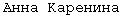
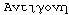

The Swedish version of "The quick brown fox..." (flying snipes seeks rest on soft tussocks") is courtesy of Martin Norbäck.
The Russian version ("Eat more those soft french 'little-sweet-breads' and drink tea") is courtesy of Valek Filipov.
Various other pangrams from http://shair.net/misc/txt/pangram.en.
The Russian text is from Anna Karenina () by Tolstoy.
The Spanish text is Don Quijote de la Mancha by Miguel de Cervantes.
The classical Greek text is Antigone () by Sophocles.
The French text is Phèdre by Racine.
The German text is Faust by Goethe.
The Anglo-Saxon text is Beowulf.
The renaissance English text is from the Quarto edition of Much Ado about Nothing, by Shakespeare.
The Latin text is De Bello Gallico by Caesar.
The Italian text is The Inferno by Dante.
The Hebrew text is from the Passover seder.
The Welsh text is the Mabinogion (Rhagymadrodd).
The Czech text is The Good Soldier Svejk by Hasek.
The Swedish text is Pippi Långstrump går om bord by Astrid Lindgren (courtesy of Helena Gorne).
The Lithuanian text from Introduction to Lithuanian, by Dambriümas, Leonardas, et al. (courtesy of Adger Williams).
The Polish text from Zarys gramatyki porównawczej jezyków slowianskich by Stieber, Zdzislaw. (courtesy of Adger Williams).
The Macedonian from Istorija na makedonskiot jazik by Koneski, Blazhe. (courtesy of Adger Williams).
The Bulgarian from B"lgarska fonetika by Tilkov, Dimit"r and Bojadzhiev. (courtesy of Adger Williams).
The Slovene from Morfologija slovenskega jezika by Ramovs(hatchek). (courtesy of Adger Williams).
The Korean Sijo poems are courtesy of Jae-Young Lee.
The Chinese text is from Yih-King by Laautzyy, and the poem is by Lii Bair, courtesy of Edward G.J. Lee.
The Japanese text is from The Tale of Genji and a poem I am a Cat, courtesy of Kuniko Arakawa.
The Arabic text is courtesy of Thomas Milo.
The Mayan K'iche' text is from the prolog to the Popol Wuj and is courtesy of Daniel Johnson.
Various translations of the Gospel of John are taken from:
Compendium of the world's languages, by George L.
Campbell.
Belorussian, Basque, Danish, Dutch, Finnish, Georgian,
Icelandic, Irish, Norwegian (two styles), Old Church Slavonic,
Swedish, Portuguese, Cherokee, Swahili, Thai.